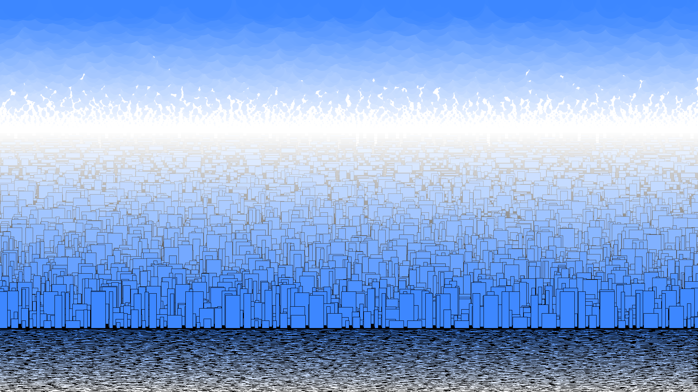
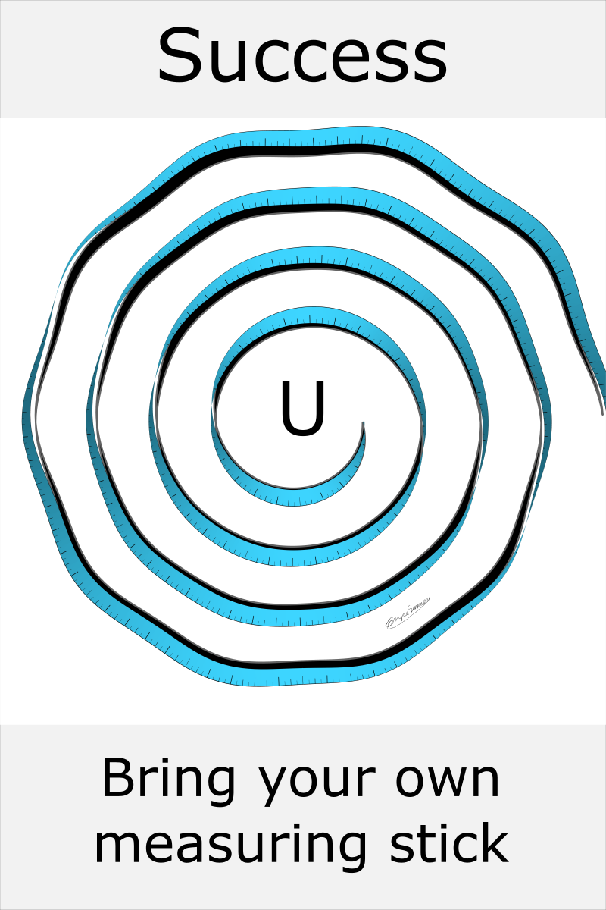
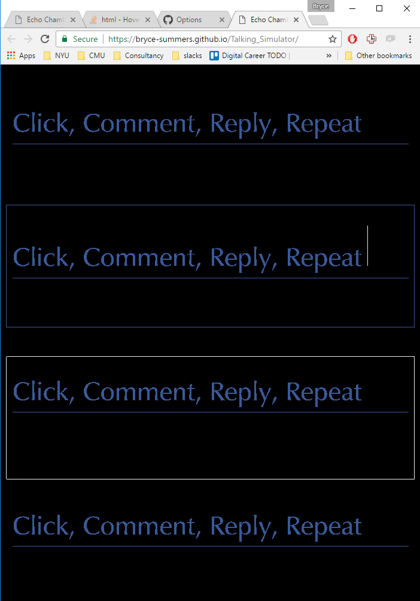
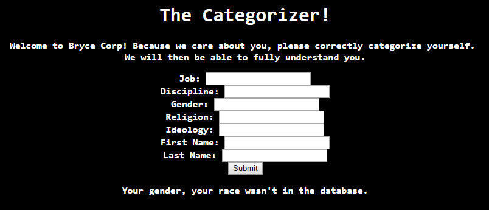
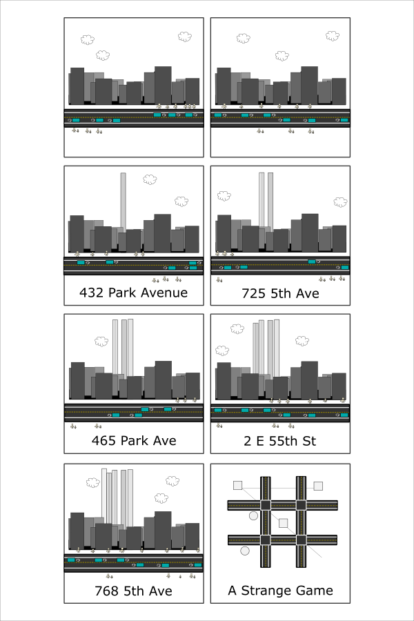
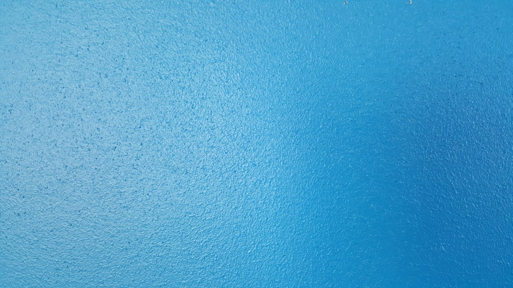
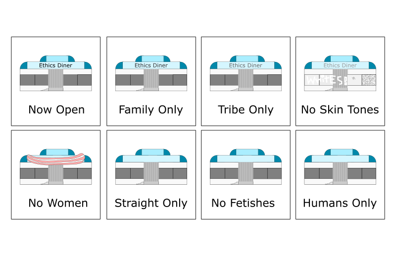

During the week of Monday March.13.2017, I will be producing art projects every day to get them off of my back burner.
| Date | Name | Image | Commentary | Links |
|---|---|---|---|---|
| Feb.25.2017 | City Illustration |  | City, Sky, Water. This is a processing study in the illusion of depth cues given by fog. | Progress Images |
| Mar.13.2017 | Follow your Measuring Stick |  | Critique: Is the meaning visible for far away? Can I make the font better with Bryce font? Should I put the U there? Should it be off center? Could I have chosen better material properties for the ruler? U is confusing. Viewer didn't know this was a ruler. Blue was confusing. It presents itself like a tapeworm. Oh dear... It could have been a rope, measuring tape, etc. Viewer thinks theat the end is the start. Destination in center. Emphasize the start. Emphasize the hast marks more than the shadows. Make those shadows grey. shadows on top were more visually communicative to viewer. Experiement with viewing it from a different perspective. Consider not having the ruler go off of the page. I want to show a rigid object bending, not a tape measure. I will take a second pass at this with some Bryce font when I have some extra time. | Progress Images |
| Mar.14.2017 | Echo Chamber |  | I want users to have a system that allows them to talk to themselves. This is a commentary on fb, fake news, and homogenous ideas. | Play Art! |
| The Categorizer |  | Users are asked to categorize themselves. | Play Art! | |
| Mar.15.2017 | Skyscraper Tic-Tac-Toe |  | I think that 432 Park Avenue is an ugly building. I've made a comic strip depicting a bunch of skyscrapers being built on a grid based city. Some ofthe buildings are circles, while the rest are circles. At the end it is revealed that that buildings were built as part of a large scale game of tic tac toe, where winning the game was more important that the aesthetics and livability of the city for the plethora of its residents. The last panel echoes a quote from the movie "War Games", where a computer learned that some games, such as thermonuclear war, are best left unplayed. Winning is often not a useful solution to the world's problems and our collective existence. | SVG Map |
| The Color Blue |  | I've started writing an essay about visual perception and language in the Fall of 2016. Teaching is presented as the display of contrasting examples where only the concept being taught is held constant. | Essay | |
| Mar.16.2017 | Ethics Road |  | Over time people (and perhaps other organisms for that matter...) come up with different metrics for access, civility, openness, judgement, etc. From a simplified egalitarian mindset, our society transitions to more and more abstract notions of differentiation over time. Perhaps we will someday run out of ways to differentiate ourselves, and we will spend all of our mental energy understanding each other in all of our complexity. Perhaps someday we will extend rights to other non-humans species be they carbon or silicon based. | [LINKS] SVG |
| Mar.17.2017 | Stuttering Voice, Finite State Machine | [DESCRIPTION] | [Image] | [LINKS] |
| Mar.18.2017 | Chairs | [DESCRIPTION] | [Image] | [LINKS] |
{kind=link}
{kind=link}
{kind=link}
{kind=link}
{kind=link}
{kind=link}